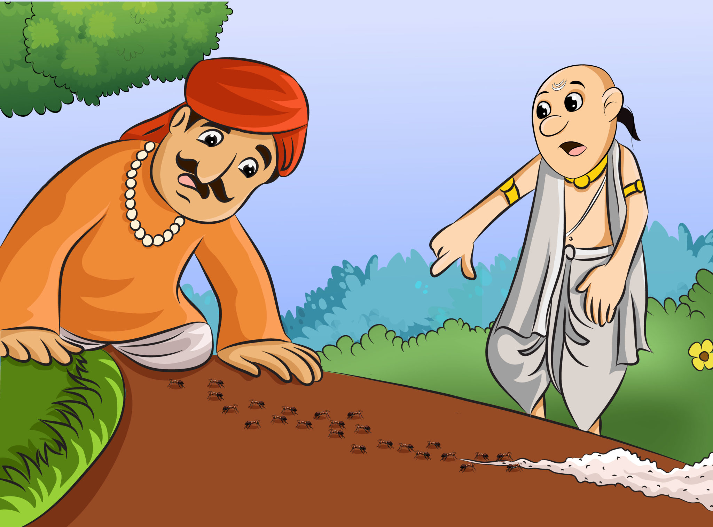
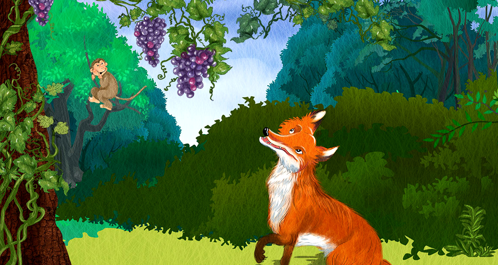
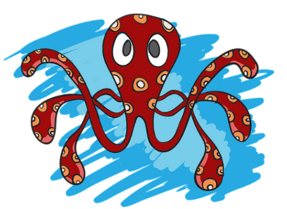
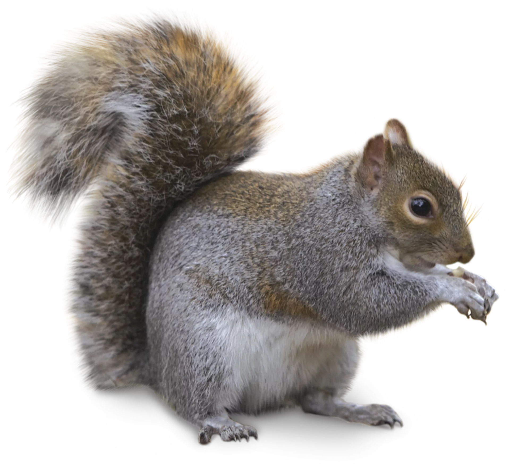
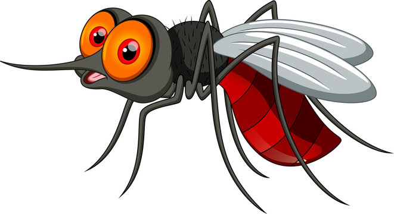
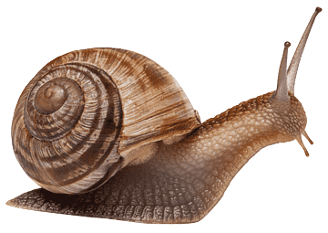
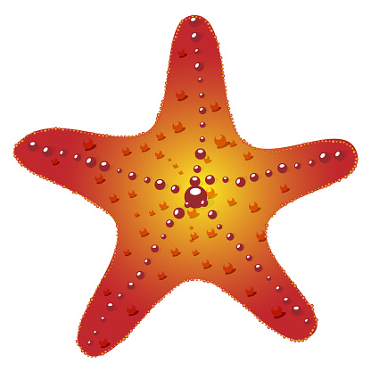
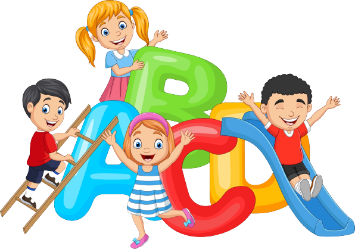

Different Stories
Raman the Detective
|  |
Krishna in Sudama’s village

|
Sweet grapes
|  |
The making of Hanumanji

|
Hanuman discovers his potential

|

Interesting Information
1. Octopus:
|  | Ostopus has a tiny brain in each of its eight arms in addition to the central brain. |
2. Dog:
| Dogs can detect cancer in their owner's body. |
3. Squirrel:
|  | The life span of a squirrel is 9 years. |
4. Mosquito:
|  | The average life span of a mosquito is 2 weeks. |
5. Snail:
|  | A snail can sleep for 3 years. |
6. Elephant:
| Elephants are the only animals that can't jump. |
7. Platypus:
| Platypus is the only animal that has no stomach. |
8. Starfish:
|  | Starfish have no brains. |
